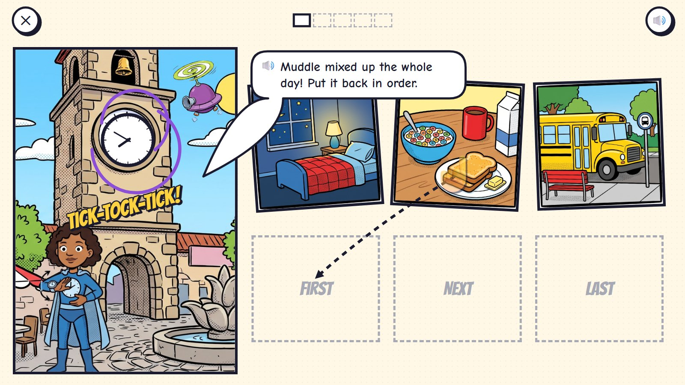
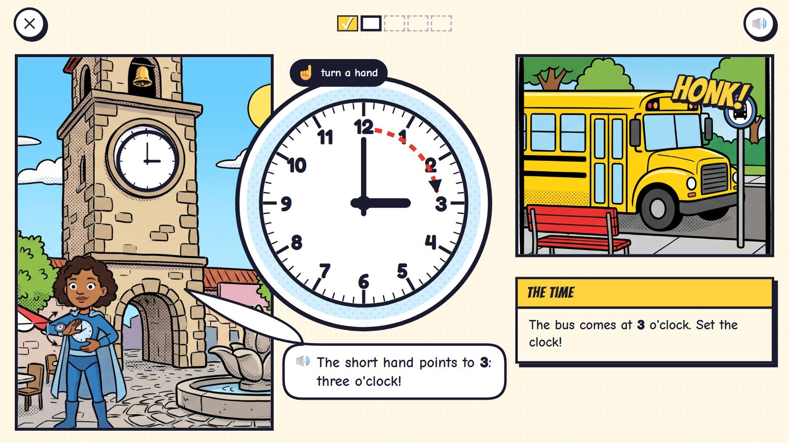
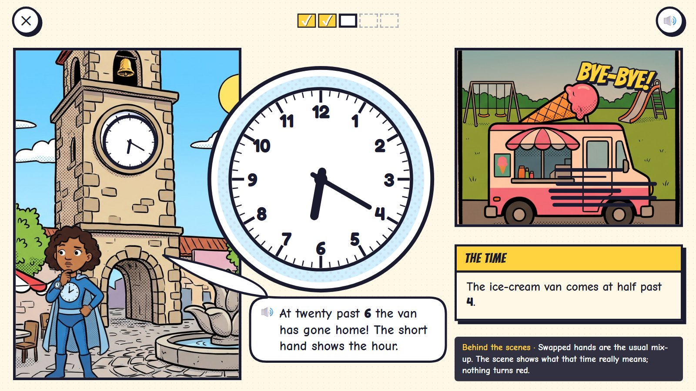
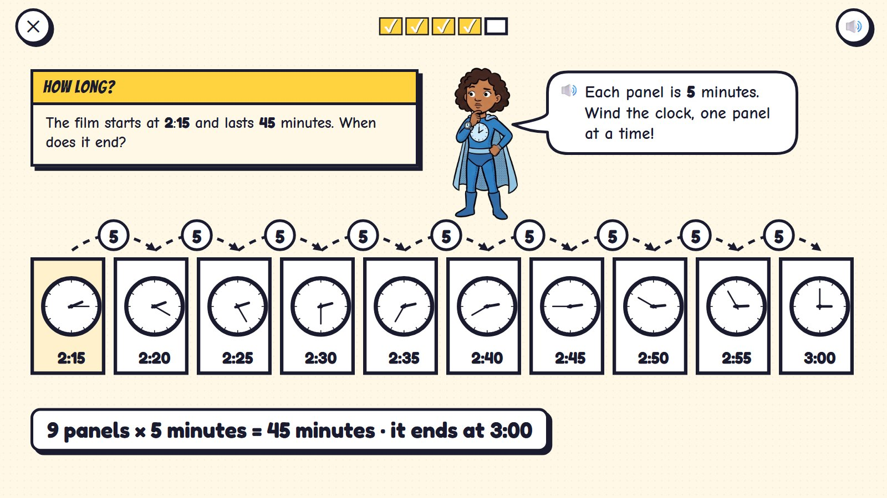
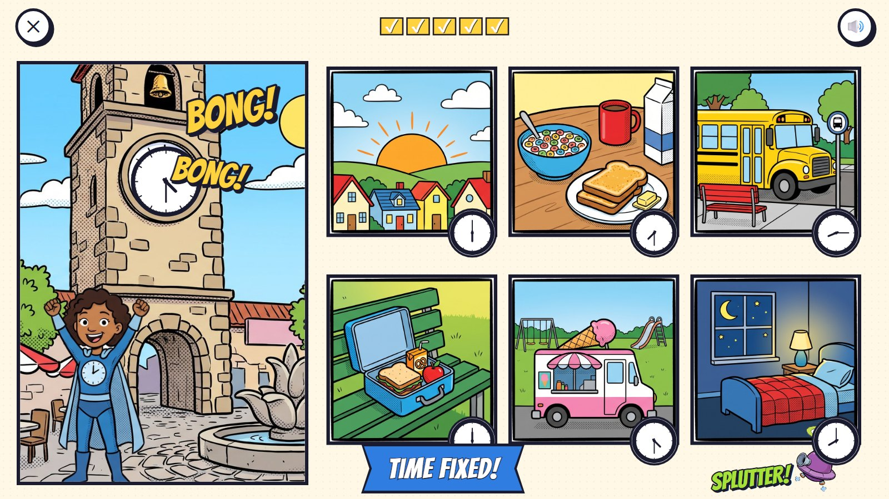

Clock Tower
Muddle spun the town clock and mixed up the whole day. In a comic, panels in a row are time passing, so Tock uses panels: first the day's moments are put back in order, then the child turns the tower's hands, and the panel beside the clock changes to that moment: the school bus at 3 o'clock, the ice-cream van at half past 4. Later, a row of five-minute panels shows how long things take.
Grades K–3 · ages 5–9 hero: Tock panel power: turn the clock's hands; panels in a row are time
The maths: Put events in order; read and set o'clock, half past, quarter past and quarter to, then to five minutes and the minute; work out how long something takes. One activity is five rounds, about two minutes. Everything works with one finger or a mouse.
🎉 The fun
Turning the tower's hands changes the world beside it: the bus comes, the ice-cream van arrives or drives off home.
🎥 The view
The tower's panel on the left; its clock opens in a big round close-up; the moment of the day in the panel beside.
🎆 The finale
The tower rings BONG and the day plays back in order, each panel with its time; Muddle's mixer splutters off (3 seconds).
Six moments

1Muddle spun the clock
The tower's clock spins. Three moments of the day are jumbled (bedtime, breakfast, the bus). The child drags them into First, Next and Last.
🔊 Muddle mixed up the whole day! Put it back in order.
Order (before and after) is where time starts for 4- and 5-year-olds.

23 o'clock
The tower's clock opens in a big close-up. The child turns the short hand to 3; the panel beside shows the bus arriving.
🔊 The short hand points to 3: three o'clock!
Turning a hand changes the panel beside it to that moment of the day.

3A wrong try
Half past 4 for the ice-cream van, but the child swapped the hands (twenty past 6): the van drives off home in the evening light.
🔊 At twenty past 6 the van has gone home! The short hand shows the hour.
Swapped hands are the usual mix-up. The scene shows what that time really means; nothing turns red.

4Half past 4
Fixed: the short hand sits halfway between 4 and 5. DING-DING: the van arrives.
🔊 Half past 4: ice-cream time!
In the app the hour hand moves with the minute hand, like a real clock.

5How long?
Ages 8–9: the film starts at 2:15 and lasts 45 minutes. A row of panels, five minutes each: nine panels later it is 3:00.
🔊 Each panel is 5 minutes. Wind the clock, one panel at a time!
How long something takes, drawn as panels: counting in fives across the page.

6Time fixed
BONG! The tower rings, Muddle's mixer splutters off, and the day plays in order, each panel with its time.
🔊 Time fixed!
Mock-ups: Gemini's comic pictures (scenes, heroes, things) with the maths drawn by code in the same inked look, the way the app would draw it, so every count, clock and colour is exact.
What is asked, for one age
- Put three moments of a day in order
- The bus at 3 o'clock
- Lunch at 12 o'clock
- The ice-cream van at half past 4
- What time is it one hour after 3 o'clock?
One activity card. The same activity serves other ages with other numbers:
| Age | What changes |
|---|---|
| 5 | Before and after; first, next, last; o'clock with the short hand alone. |
| 6 | Half past; the days of the week as a strip of seven panels. |
| 7 | Quarter past and quarter to; five-minute steps. |
| 8–9 | To the minute; how long (five-minute panels); morning and afternoon; the 24-hour clock at 9. |
Wrong answers we expect, and what happens
| Mistake | Looks like | What happens (never red, never "wrong") |
|---|---|---|
| Swapped hands | the long hand on the hour | the scene shows that time (the van has gone home) |
| Half past 4 read as half past 5 | the short hand is near 5 | "The short hand has not reached 5 yet: it is still on its way from 4." |
| Counting minutes in ones | says 3 minutes past for 15 past | from age 7 a ring outside the face shows 5, 10, 15 … in small numbers |
| How long from the wrong start | counts from the end time | the strip of panels always starts at the start time |
What it needs
- The town square with its clock tower (the face left blank)
- Six moments of a day (one sheet of panels)
- The clock drawn by code (any time, exact hands)
- Tock in four poses; Muddle's mixer
- Voice: times in words
Test robot: Reads the time from the question, turns the minute hand (the hour hand follows), checks both angles and the panel shown, and once swaps the hands on purpose.
One question
← Back to Comic City · Kitten Rescue · Missing Pieces · Rooftop Hops · Clock Tower · Echo's Copies · Colour Lab · Sticker Pack